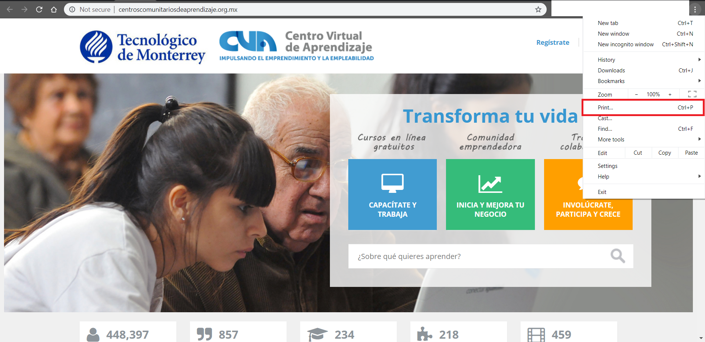
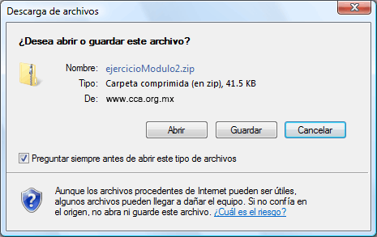
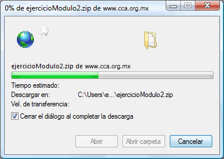

Tema 6. Imprimir y descargar información de Internet
Para terminar este módulo le presentamos el procedimiento para imprimir una página y para descargar archivos de internet.
Imprimir una página de Internet
| 1 | Despliegue la página que desea imprimir en la pantalla de su navegador Microsoft Internet Explorer o Mozilla Firefox. |
| 2 |
Haga clic en el botón "Imprimir" de la barra de herramientas.
 |
Descargar información de Internet
Muchas páginas de Web permiten obtener una copia de sus documentos, software gratis (Freeware) o productos promocionales (Demos).
Cuando es necesario "Descargar" (Download) un documento de la red, se debe realizar lo siguiente:
| 1 | Haga clic en el documento que se desea "Descargar" (Download). |
| 2 |
Lea las instrucciones para bajar el documento.
Generalmente el sitio que ofrece el archivo para ser bajado a la computadora del usuario, proporciona las instrucciones precisas para hacerlo. Se recomienda leer las indicaciones e imprimirlas cuando sea necesario, para que una vez que se tenga el archivo guardado en la máquina, se ejecute correctamente. |
| 3 |
Guarde el documento.
El navegador utilizado en el proceso presentará una ventana de opciones, seleccionará su propio folder "de manera automática" para guardar el documento o bien el usuario seleccionará la ruta de acceso deseada. Se recomienda guardarlo en el Escritorio (Desktop) para localizarlo fácilmente.  |
| 4 |
Verifique a que se realice el proceso de "descarga" del documento.
El proceso para "descargar" el documento a la unidad de disco puede tardar varios minutos, dependiendo del tamaño del documento y la velocidad de conexión del módem o la red. La ventana del proceso de transferencia, muestra el tiempo estimado en realizar la transacción. Con el botón "Cancelar" (Cancel) puede abortar la operación e intentarlo más tarde.  |